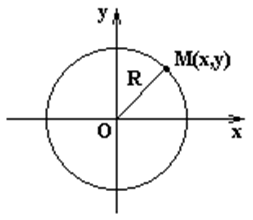

6.3.2. Окружность

Окружность представляет собой геометрическое место
точек, равноудаленных от точки  , называемой
центром окружности.
, называемой
центром окружности.
, называемой
центром окружности.Уравнение окружности можно получить из уравнения эллипса
при : .
, называемой
центром окружности.